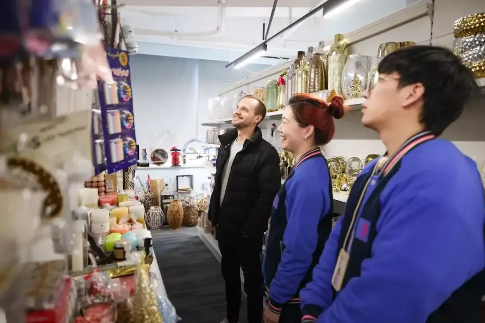
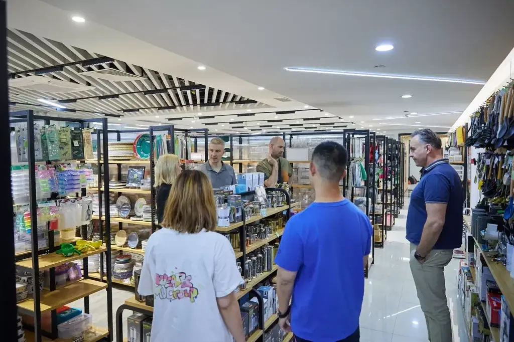

What does a retail sourcing and supply-chain partner do?
A retail sourcing and supply-chain partner turns a store or brand plan into an executable product programme. The work can cover category planning, product and supplier selection, samples, OEM development, quality control, compliance coordination, multi-supplier consolidation and delivery planning.
For a growing retailer, the goal is not simply to buy more units. It is to build a product range that fits the market, protects margin and can be reordered with greater control.
Case-study note: The companies are not named in order to protect commercial confidentiality. Project details are based on buyer briefs and active sourcing work. Some programmes remain in development, so the outcomes below describe work completed to date rather than guaranteed final commercial results.
The context: retail growth creates supply-chain complexity
Retail expansion—especially a new store, shopping centre or private-label range—requires more than access to factories. The buyer must decide which products belong together, how prices should ladder across the assortment, which specifications must be controlled and how different suppliers can meet one launch calendar.
ROYAL UNION, backed by MU Group’s wider sourcing and supply-chain foundation, has been working with growing international customers in Europe, South America and the Middle East. Four projects illustrate how different business models can share the same underlying need: a scalable retail operation supported by reliable sourcing and product strategy.
Four clients, four different retail growth challenges
1. A Kosovo company preparing a multi-floor shopping centre
The buyer needed to plan products for approximately 800 square metres of retail space with an initial working budget of around €100,000. The required assortment crossed home decoration, kitchenware, toys, pet products, seasonal goods, accessories and additional consumer categories.
The difficulty was not finding products. It was preventing too many disconnected options from slowing the decision process. The buyer needed a structured category map, a clear price range and enough commercially relevant products to fill the space without overloading inventory.
2. An Ecuadorian brand expanding private-label ceramic tableware
The customer reported annual purchasing volume equal to approximately eight 40HQ containers. Its existing concern was quality variation between orders: some deliveries performed well, while others were less consistent.
That inconsistency creates particular risk when a brand is adding its own logo and packaging. The project therefore required more than a new quotation. It required clearer specifications, approved samples, supplier selection and repeatable quality references before scaling the private-label range.
3. An Argentine supermarket chain broadening its non-food range
This ten-store chain wanted wider access to glassware, silicone products, melamine products and other household categories. It did not simply need bulk quantities of one item. It needed a retail-ready mix that could balance variety, pricing and inventory efficiency across several stores.
The sourcing challenge was to create enough assortment depth for the shelves while protecting cash flow and avoiding fragmented buying from too many disconnected suppliers.
4. A UAE brand entering the OEM cookware market
The customer required an OEM cookware programme with custom branding and packaging, detachable handles and market-specific material or coating requirements. The project also needed fast samples and clear decision support so that the buyer could move from brand concept to a production-ready range.
Food-contact products require careful specification and documentation planning. Depending on the product and destination, the project may involve LFGB testing or evidence relevant to U.S. FDA food-contact requirements. These needs must be identified before production rather than treated as a final shipping task.

The five-step collaboration process
Step 1: understand the business model and target market
Every project begins with the commercial context: target customer, sales channel, store format, price positioning, categories, expected volume, destination market and launch timing. For the Kosovo project, the team also reviewed reference websites supplied by the customer to align recommendations with local retail expectations.
This stage prevents a common sourcing mistake: choosing products that look attractive in isolation but do not form a coherent assortment.
Step 2: provide structured product-selection support
Instead of sending random catalogues, the team organizes products by category and decision stage. A useful selection process can include:
- Category-specific product lists rather than mixed files.
- Comparable options at relevant price and specification levels.
- Products with strong market or sales potential, supported by current supplier and showroom observations.
- Shortlists that are revised as the buyer gives feedback.
- A staged filtering process that narrows categories before final item selection.
This structure is especially important for a new store. It helps the buyer compare like with like, build a balanced assortment and avoid making hundreds of isolated decisions.
Step 3: improve quality and supply consistency
Quality control begins before inspection. The team screens relevant suppliers, confirms specifications, uses actual product photos and arranges samples where appropriate. The approved sample and written product requirements then become the reference for production and inspection.
For the UAE cookware project, sample coordination included detailed specifications and rapid handoff to the customer’s appointed freight partner. Sample fees, freight and any later credit arrangements are confirmed project by project; they should never be assumed without written supplier terms.
Step 4: support customization and private-label development
Brand differentiation can include logo application, custom packaging, colour selection, product feature adjustments, carton marks, labels and manuals. These decisions are documented before bulk production.
This is central to both the Ecuadorian tableware project and the UAE cookware programme. In each case, the sourcing work must protect the brand identity while keeping production practical and scalable.
Step 5: coordinate compliance evidence and technical documents
The applicable requirements depend on the product, age group, materials and destination market. Project work may include coordination of:
- CE marking and EN 71 testing evidence for applicable toys sold in relevant European markets.
- LFGB testing or documentation relevant to food-contact cookware and tableware.
- Evidence relevant to applicable U.S. FDA food-contact requirements.
- Technical files, supplier declarations, labels, traceability information and test reports.
ROYAL UNION can coordinate documents and testing within the agreed scope, but it does not issue regulatory certificates. Reports, declarations and certificates must come from the relevant supplier, accredited laboratory or competent authority. The importer should confirm final legal requirements for its exact product and market.

Core capabilities behind the projects
Multi-category consolidation
A retailer can build a broader assortment through one coordinated programme rather than managing every product category independently. When quantities, carton dimensions and schedules allow, goods from several suppliers can be received, reconciled and prepared for one consolidated shipment.
Market-led product recommendations
Product selection should not be passive. The sourcing team can contribute current showroom observations, supplier information and category experience while the buyer retains the final commercial decision for its market.
A quality-control system, not a final check only
Supplier screening, written specifications, samples, production follow-up and inspection work together. This helps reduce the risk of a good first order being followed by an inconsistent repeat order.
OEM and private-label execution
From logo application to packaging and product adjustments, the programme connects brand decisions with supplier capability, sample approval and production records.
Flexible purchasing routes
Some buyers require full-container production. Others need mixed categories, lower quantities for selected items or a staged launch. The sourcing plan should match the business model instead of forcing every project into one buying format.
Compliance coordination
Product and market requirements are introduced early enough to influence the supplier, material, label, testing and document plan. For regulated or higher-risk categories, the buyer and sourcing team should agree the evidence required before confirming the order.
Progress and value delivered to date
What buyer feedback tells us
Formal testimonials are still being collected, but recurring comments from project discussions include:
“I am interested in many products. I need more product categories.”
“We are looking for a long-term, high-quality business partnership.”
“How should we select the products?”
Together, these questions reflect the central value of structured retail sourcing: moving the buyer from too many possibilities and inconsistent information toward clearer decisions and greater operational confidence.
Frequently asked questions
What products can ROYAL UNION source for retail projects?
Project scope can cover home decoration, kitchenware, tableware, toys, pet supplies, seasonal goods, storage, accessories and other consumer-product categories. The final sourcing route depends on the specification, quantity, target market and price level.
How does ROYAL UNION help a business source products from China?
The process can include market and category planning, product and supplier shortlisting, quotations, samples, product development, purchase-order follow-up, quality control, consolidation and delivery coordination.
Does ROYAL UNION support OEM and private-label manufacturing?
Yes. Work can include logo application, packaging development, colours, features, samples and production coordination. Feasibility, MOQ and cost depend on the product and supplier.
How is quality controlled with China suppliers?
The control plan can combine supplier screening, written specifications, sample approval, production follow-up and inspection against agreed criteria. The scope should match the value and risk of the order.
What compliance support is available?
ROYAL UNION can coordinate supplier documents, testing and technical records within the project scope. The exact requirements depend on the product and market, and relevant documents are issued by suppliers, laboratories or authorities—not by ROYAL UNION.
Can different product categories share one container?
Yes, when product dimensions, quantities, supplier timing and shipping requirements permit. The team can receive goods from multiple suppliers, reconcile quantities and prepare a consolidated shipment.
What is the typical order process?
A typical route is: confirm the brief, select products, compare quotations, approve samples, confirm the purchase order and deposit, follow production, inspect goods, settle the agreed balance and coordinate shipment. The exact commercial terms vary by supplier and project.
How can ROYAL UNION support a new store opening?
The team can help translate the store format, target customer, price ladder, categories and budget into a structured assortment, then coordinate products, samples, orders, quality and consolidated delivery.
Can buyers order samples before bulk production?
Yes. Sample availability, cost, freight and any credit terms vary by supplier and should be confirmed in writing before ordering.
Why work with ROYAL UNION and MU Group?
ROYAL UNION gives the buyer one Yiwu-based sourcing team for day-to-day execution, supported by MU Group’s broader international-trade and supply-chain foundation. The practical value is coordinated multi-category sourcing, development, quality, consolidation and delivery planning.
Conclusion: retail growth needs a product strategy
Opening a new store or expanding a retail business takes more than purchasing stock. The buyer needs the right assortment, stable quality, a differentiated brand, market-aware documentation and an efficient route from multiple suppliers to the final destination.
Whether the project is a new shopping centre, a private-label range or a wider non-food assortment, ROYAL UNION’s role is to act as a long-term sourcing and supply-chain management partner—not simply another product seller.
Planning a store, product range or private-label programme?